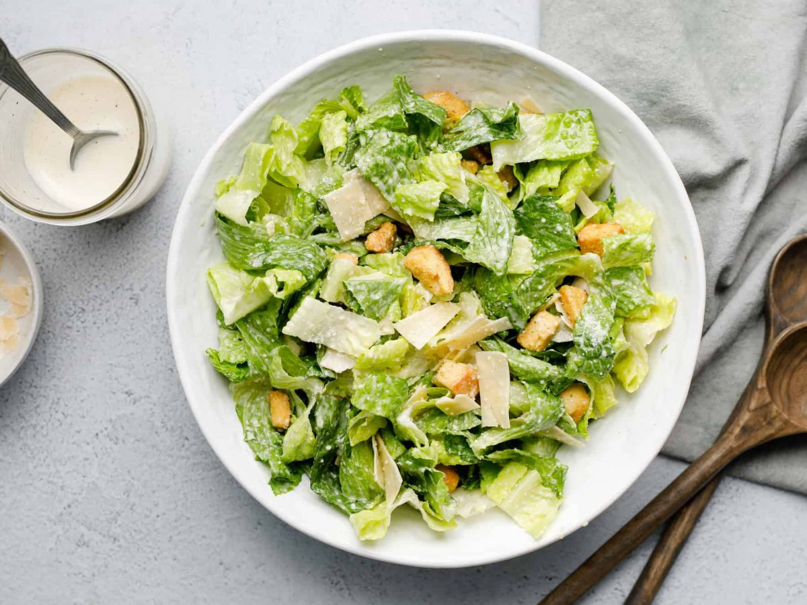

Classic Caesar Salad

A Caesar salad is a green salad of romaine lettuce and croutons dressed with lemon juice (or lime juice),
olive oil, egg, Worcestershire sauce, anchovies, garlic, Dijon mustard, Parmesan cheese, and black pepper.
In its original form, this salad was prepared and served tableside.
Ingredients
These ingredients are for 2 servings and take 20 minutes to cook.
Dressing :
- 3 anchovy fillets
- 2 cloves garlic, finely chopped
- ½ lemon, juiced
- 2 tablespoons red wine vinegar
- 1 large egg yolk
- 1 tablespoon Dijon mustardi>
- 1 dash Worcestershire sauce
- ¼ cup olive oil
- salt and ground black pepper to taste
Salad :
- ½ head romaine lettuce, chopped
- ¼ cup grated Parmesan cheese
- 2 tablespoons croutons
Recipe instructions
- Gather all ingredients.
- To make the dressing: Mash anchovy fillets and garlic in a large salad bowl. Add lemon juice, red wine vinegar, Dijon mustard, egg yolk, and Worcestershire sauce; whisk until smooth and creamy. Gradually stream in olive oil while whisking constantly. Season with salt and black pepper.
- Make salad: Gently mix romaine lettuce and Parmesan cheese into dressing until thoroughly coated.
- Serve salad topped with croutons.
Return to main page